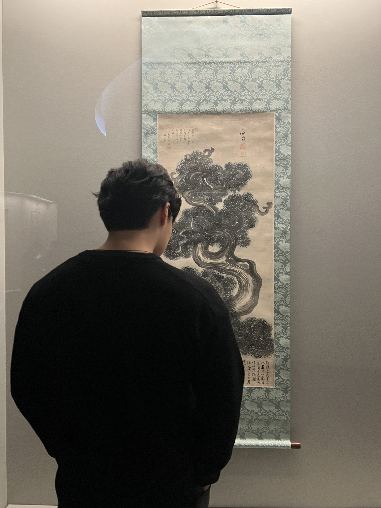

|
Jiwoong (Andrew) Sohn
Hello. I'm a PhD Student at ETH Zürich. Previously, I obtained my Master's degree in Computer Science and Engineering at Korea University with early completion, where I was fortunate to be advised by Prof. Jaewoo Kang. I work closely with Dr. Hyunjae Kim in Qingyu Chen's Lab, and Xiangru Tang, Yanjun Shao in the Gerstein Lab at Yale University, where I was a research intern. I also work closely with Prof. Mujeen Sung, Prof. Irene Li, Tomasz Sternal, and Jaehoon Yun.
I’m always happy to connect and discuss about research. |
 f |
{kind=link}
|
CV / Email / LinkedIn / Google Scholar / GitHub / X / ResearchI'm interested in natural language processing (NLP), large language models (LLMs), information retrieval (IR), and medical artificial intelligence (MAI). My research focuses on developing AI solutions that can make meaningful contributions to healthcare and medicine. |
Selected Publications
[5] Med-PRM: Medical Reasoning Models with Stepwise, Guideline-verified Process Rewards
[4] MedAgentsBench: Benchmarking Thinking Models and Agent Frameworks for Complex Medical Reasoning
[3] Rationale-Guided Retrieval Augmented Generation for Medical Question Answering
[2] Small Language Models Learn Enhanced Reasoning Skills from Medical Textbooks
[1] Improving Medical Reasoning through Retrieval and Self-Reflection with Retrieval-Augmented Large Language Models For a full list, see my Google Scholar. |
Other Publications
[3] DMIS Lab at MedHopQA-2025: Ensemble Multi-Retrieval Methodologies with Reasoning Language Model Decision
[2] DMIS Lab at ArchEHR-QA 2025: Evidence-Grounded Answer Generation for EHR-based QA via a Multi-Agent Framework
[1] KU AIGEN ICL EDI@BC8 Track 3: Advancing Phenotype Named Entity Recognition and Normalization for Dysmorphology Physical Examination Reports |
Honors and Awards
Scholarships and Academic Honors
[4] Integrated Bachelor's and Master's Scholarship (50% Tuition) (Sep. 2023 - Feb. 2025)
[3] Early Completion (Sep. 2023 - Feb. 2025) [2] Semester High Honors (Fall 2020) [1] Semester High Honors (Fall 2019)
Competition Prizes[5] 1st Prize, Shared Task on MedHopQA (BioCreative IX (IJCAI 2025)) — Aug 2025 [4] Top Performing Teams, Shared Task on Clinical Text Generation (ACL 2024 BioNLP) — May 2024 [3] 2nd Prize (5,000 USD), iPBL Competition (LG Electronics) — Feb. 2024 [2] 3rd Prize, Genetic Phenotype Extraction (BioCreative VIII (AMIA 2023)) — Sep. 2023 [1] 2nd Prize, SDGs Innovation Arduino-based Technology Competition — Dec. 2020 |
Teaching Experience
[6] Multimodal Medical AI (262-0201-00L) — Fall 2025
[5] SW Programming Basics (GECT002) — Spring 2024
[4] Machine Learning (COSE362) — Fall 2023
[3] Advanced Data Science for Finance (DFE620) — Fall 2023
[2] Python Programming for Everybody (COSE156) — Fall 2020
[1] Private Academies and Tutoring — 2016 - 2023 |
Invited Talks
[2] 6th SFCNS Congress 2025
[1] Krauthammer Lab |